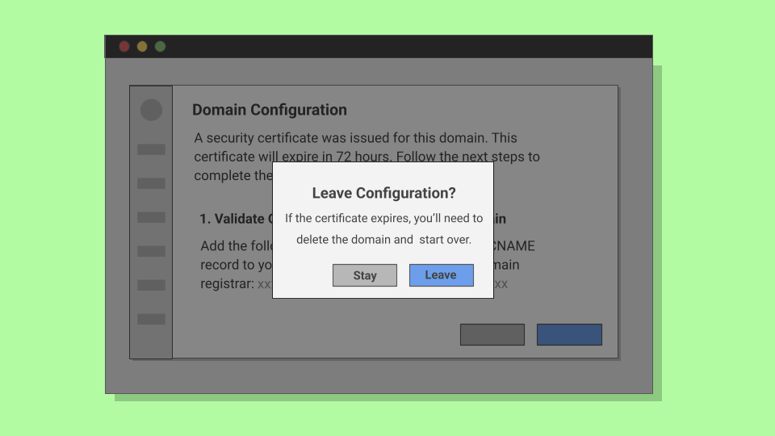

Simplifying Domain Configuration
Sometimes UX writing has to bridge the gap between deeply complex processes and the people asked to use them. Domain configuration was one of those cases.
Methodology Note
- Company: Anonymized for confidentiality reasons
- Data: Cross-functional stakeholder interviews and system requirements
- Purpose: Demonstrate complex UX writing and flow simplification
- Tools: Figma, stakeholder interviews
- Target users: Low-code platform customers setting custom domains
Context
As one of the UX writers at a fast-moving low-code software company, I was asked to design the experience for customers setting custom domains to the web apps they built. On the surface, this sounded straightforward. It seemed like a simple process of walking users through adding and verifying a domain. In practice, it turned out to be far more complex.
The Product Designer assigned to the feature was unavailable, as was the case with the Product Manager. I was left with vague directions and no clear blueprint for how the flow should work.
From Uncertainty to Clarity
Without a plan to fall back on, I took the lead. I had no background in DNS records, CNAMEs, or SSL validation, so I started with research. I read up on the basics, then sat down with a Cloud Architect stakeholder and a few backend developers to understand the system requirements. Their explanations gave me the grounding I needed to write with confidence.
With that foundation in place, I partnered with another Designer who happened to be available. Together we began shaping the experience into a step-by-step flow that would feel effortless for users, even if the underlying process was highly complex.
The System Process
Our experience came with some system restraints that couldn't be changed. Because we were issuing SSL certificates for the domains being added to the platform, we had a limited window to ensure the SSL validation process was completed within 72 hours.
This meant that customers needed to add their domain to the platform, verify ownership, and point the domain to their app within that time frame to avoid certificate expiration.
The steps weren't exactly intuitive, either. Customers had to add CNAME records to their domain's DNS settings. While this may sound simple to experienced users, it could be a foreign concept to many.
On top of that, the 72-hour window for SSL validation was critical. If users missed it, they had to restart from scratch. In other words, users would have to delete the domain from the platform and add it again, only to repeat the same steps.
Instead of piling more jargon into the UI, we set out to design a flow that guided users through these constraints without overwhelming them.
The Approach
The key was to reduce cognitive load. We divided the flow into three distinct steps—add a domain, validate ownership, and point the domain.
This ensured that users only had to focus on one action at a time. Each step was framed in plain language and anchored by a clear goal.
Usability testing on low-fidelity mockups revealed that some users were unfamiliar with SSL certificates but reacted well to the word security. That insight informed a critical shift. Instead of "SSL certificate," we told users: "A security certificate was issued for this domain. This certificate will expire in 72 hours. Follow the next steps to complete the setup before expiration."
This wording simplified the concept, highlighted the time constraint, and focused attention on the next action.

Guiding Users Through Uncertainty
The same principle applied to expired states. Originally, users who missed the 72-hour window were left staring at a system message that offered no path forward. We replaced it with: "The security certificate for this domain has expired. To reuse this domain, delete it and add it again."
This avoided blame, stated the issue in clear terms, and gave users a direct recovery path. We also added helpful empty states at key points.

To clarify the purpose of custom domains, we added an empty state for users first discovering the feature. When no domain had been added yet, the interface now clearly explained why the section was blank and how to get started.

If, for whatever reason, users weren't able to complete setup and one of the certificates assigned to a domain expired, users would now see another empty state explaining what happened and how to fix it. This prevented users from getting stuck.

We also added confirmation modals for users attempting to leave the configuration before completion. This prevented certificate expiration and gave users a chance to reconsider.
Outcome
The copy and structure made the domain configuration process easy to complete and less intimidating than it would seem at first glance.
Customers didn't feel blocked by complex jargon or hidden deadlines. The product also gained a consistent voice in error states and flows, aligning with our conversational tone.
Results
In usability tests, participants reported that the flow felt approachable and easy to follow. Users were able to complete the configuration with minimal guidance.
Support data backed this up. I contacted the support team to learn that few to no tickets related to SSL and DNS setup were being filed in the weeks following the rollout, giving the support team space to focus on more complex product issues.
By restructuring the flow into simple steps we turned a fragile, failure-prone process into a guided experience. It was a reminder that even in highly complex features, words carry the weight of the experience.